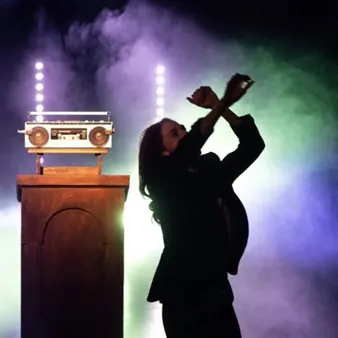

da lun 2 nov a mar 3 nov · dalle 20:30
Teatro Miela - Funerale all'italiana
di Benedetta Parisi e Alice Sinigaglia regia Alice Sinigaglia con Benedetta Parisi voce off Michele Coiro suono Fabio Clemente produzione Collettivo EFFE «Rimarremo morti per molto più tempo di quanto siamo stati vivi…» Non senza slancio comico, l’interprete di questo monologo…
 Indicazioni
Indicazioni
- Costi e prenotazioni
- Costo non indicato · Prenotazione non indicata
- Programma
- Programma da verificare. Apri la fonte ufficiale per orari e possibili aggiornamenti.
- In caso di maltempo
- Nessuna indicazione specifica pubblicata.
- Note
- Acquisito automaticamente dalla fonte.
L’EVENTO
Descrizione completa
di Benedetta Parisi e Alice Sinigaglia
regia Alice Sinigaglia
con Benedetta Parisi
voce off Michele Coiro
suono Fabio Clemente
produzione Collettivo EFFE «Rimarremo morti per molto più tempo di quanto siamo stati vivi…» Non senza slancio comico, l’interprete di questo monologo esplora la cerimonia sociale più discussa attraversando ricordi famigliari, antropologia e religione. Benedetta Parisi gioca con il rito funebre, oggi incrostato di formalità, e lo trasforma in un racconto condiviso, una festa collettiva. Alla ricerca di un momento di verità.
Più che un monologo, lo spettacolo mette in scena un funerale. Il pubblico viene accolto come a una vera cerimonia, invitato a vestirsi di nero, a portare un fiore, a prendere posto davanti alla commemorazione di una persona che non conosce: una donna qualunque, una nonna sconosciuta, il cui nome appare sulle pareti del teatro come un ricordo senza volto.
La sala si trasforma in uno spazio sospeso tra chiesa e palcoscenico. Fiori, candele, immagini sacre e un pulpito dominano la scena, mentre il silenzio accompagna l’attesa. Ma qualcosa non va come previsto: il sacerdote non arriva e la celebrazione resta senza guida.
A prendere la parola è allora l’attrice, chiamata a colmare quel vuoto. Con esitazione, ironia e tenerezza, prova a dare forma al rito. La funzione procede tra imprevisti, musiche che gracchiano dagli altoparlanti, racconti di famiglia e memorie condivise. Il funerale si trasforma gradualmente in qualcos’altro: una festa imperfetta, un gioco collettivo, un’occasione per interrogare il significato stesso del commemorare.
Attraversando tempi e generazioni, dialogando con gli antenati e immaginando i discendenti, l’interprete coinvolge il pubblico nella costruzione di una nuova ricorrenza, laica e condivisa. Una celebrazione in cui il sacro coincide con gli affetti, le preghiere diventano ricordi, aneddoti e voci tramandate, e la memoria si fa esperienza collettiva. Funerale all’italiana è una messa profana che guarda alla morte con leggerezza e profondità, trasformando il rito in un momento di incontro, partecipazione e umanità. Prevendita:
biglietteria del teatro (tel. 0403477672) tutti i giorni dalle 17.00 alle 19.00
Ticketpoint Galleria Rossoni (Corso Italia 6/C) da lunedì a sabato 8.30-12.30 e 15.00-19.00
Online: www.vivaticket.com
IL PROGRAMMA
Programma e orari
Appuntamenti raccolti dalle fonti elencate. Dove manca un orario, non è ancora disponibile in questa scheda.
Programma pubblicato
- Dal 2026-11-02 al 2026-11-03
INFORMAZIONI UTILI
Prima di partire
- Controllare la fonte prima di partire.
ORGANIZZAZIONE